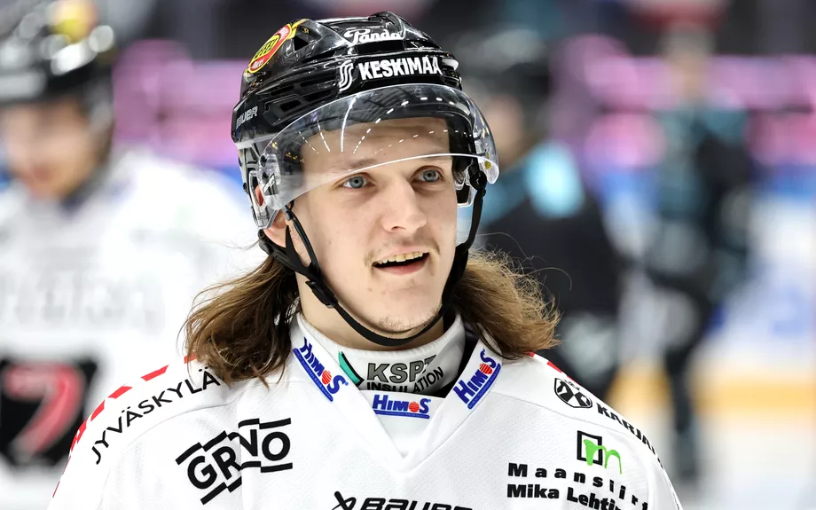
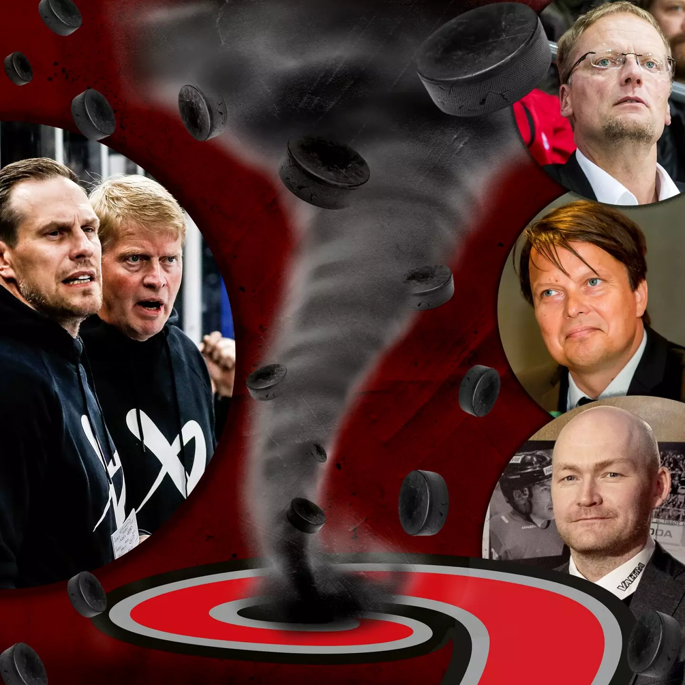
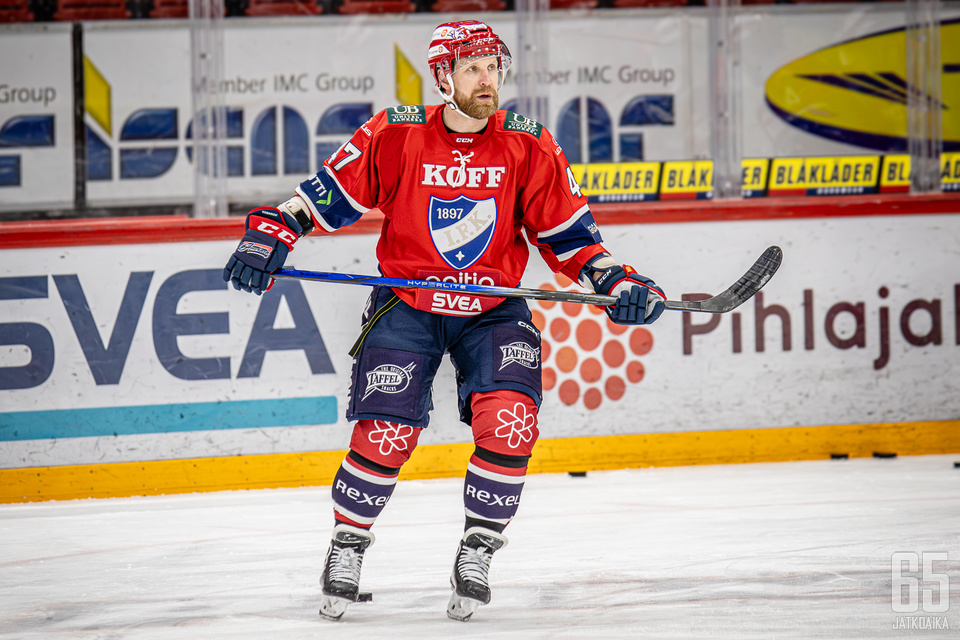
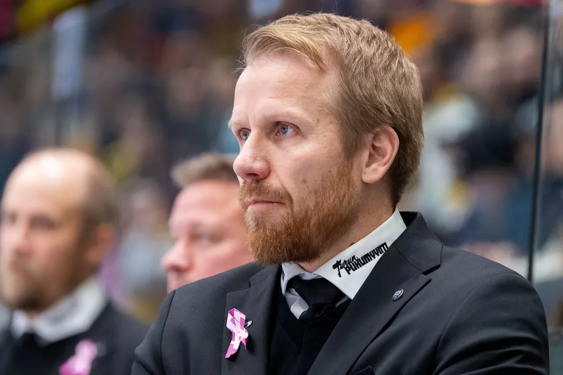

 JYP hyllytti Sami Nikun – Myös muut tähdet lähdössä?  Hurjia paljastuksia Jukka Rautakorven potkujen taustalta – tilanne tulehtui, kun mysteerimies Helsingistä astui kuvioihin SM-liigassa häkellyttävä käänne: Tommi Niemelä oli jo potku-uhan alla – nyt hän palaa dramaattiseen ”kriisikokoukseen”  Komarov kuntoutui ensimmäiseen HIFK:n liigaotteluunsa − "Täytyi katsoa, että kestän pelitilanteet" Kohuvalmentajalta outo siirto  TPS:n päävalmentaja lyttäsi pelaajansa murskatappion jälkeen: "Viettivät vapaapäivää